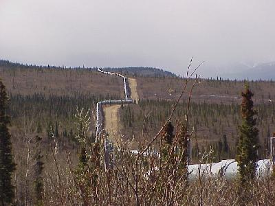
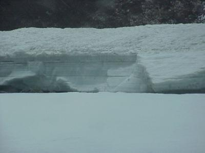
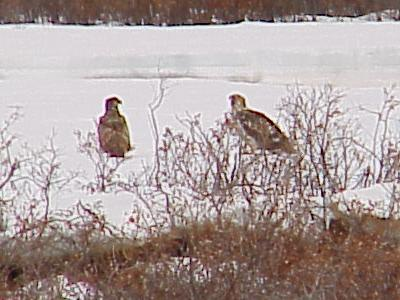
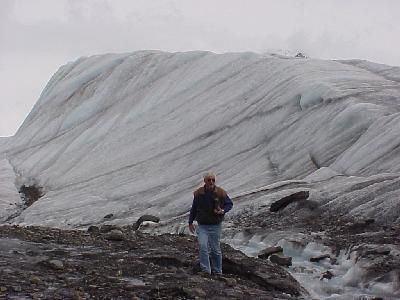
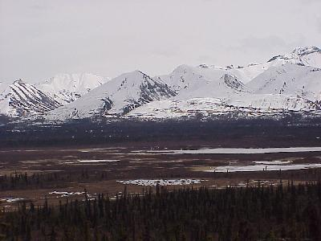

May 28, 4670 miles
| We started the day leaving camp at 9:00. Last night we had to force ourselves to bed as it was still light enough to easly read at 11:30PM. No wonder no one else wanted to use the phone while I was uploading web pages to internet. | |
| Like I said yesterday, when you come to Alaska you see the pipeline, again and again. |  |
| Today, May 28, we are still seeing a lot of snow on the ground, even at relatively realistic elevations. This snow was in one of the creek bottoms. We also experienced a short burst of intensive snow/sleet/hail. We realy don't know what to call it, it rained little snowballs, not ice, about the size of small peas. |  |
| On our way up to Alaska we saw a bald eagle, but now that we are were they are supposed to be more popular, we have not seen any. We did see this pair of eagles sitting on the snow; in a later meeting with Mr. Ranger we found out these are either Golden Eagles or Yearling Bald Eagles (no white feathers on their head yet). |  |
| Kind of like the pipe, see above, I don't think you can come to Alaska without seeing a glacier. We walked out to the Matanusk Glaicer, where you could stand right on the glacier's toe. I was amazed at how much dirt and rock is actually on top of the glacier's ice at the toe that you walk over before you get to any exposed ice. |  |
| Mountians again. Mountians were in sight all day long, except when clouds or the snow /sleet/rain obscured them. Some fantastic views. |  |
| We pulled into the camp grounds, just
outside Palmer, at 8:00 after traveling 304 miles. The
campground is a little busier than the others we have
been to, but this is the first of the US holiday weekend. Wildlife for the day included: moose (3); deer (2); porcupine (2); dall sheep (tons); and eagles (2). Tomorrow will be a sight seeing day, with little travel involved. |
|